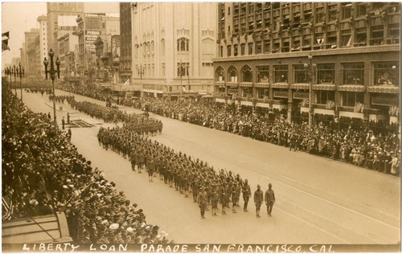
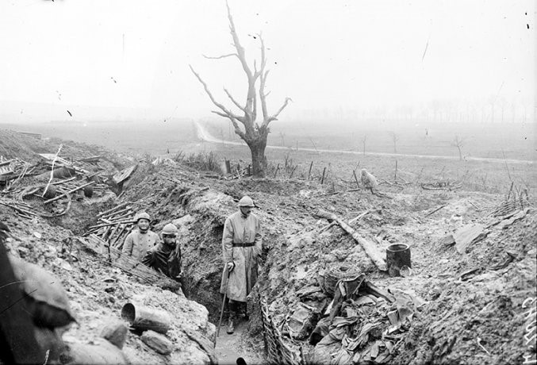

This is a guest post by Aaron J. Jackson, PhD student, UCSF Department of Anthropology, History and Social Medicine.

Figure 19 – San Francisco Chronicle, Monday, November 11, 1918
One hundred years ago, on the eleventh hour of the eleventh day of the eleventh month, the “war to end all wars” effectively came to an end as the Armistice went into effect. This momentous occasion would go on to be celebrated bas a national holiday in Britain, France, and the United States, where Armistice Day eventually expanded to honor the service of all veterans. With the centenary of the Armistice, it is worth reflecting on both the end of the First World War and on what it means to honor veterans’ service.
As a veteran myself, the phrase “thank you for your service” can at times feel like a platitude. It seems assumptive on many levels. Most often, those expressing that sentiment are strangers who have no knowledge of the details or motives of a given veteran’s service. And that can lead to difficult, guarded, or awkward conversation to follow. For the veteran’s part, it may be difficult to convey the multiple and complex layers of what our service means to us. A gulf can thus form between veterans and civilians, and that’s a shame.
As a historian, it is my sincere hope that the exploration of the past can provide useful insight in the present and future. By exploring veterans’ experiences in detail, we may be able to get past the platitudes and patriotic veneer and achieve a better understanding of what veterans’ service means. So it is my genuine privilege to present this brief account of the unit from the University of California School of Medicine during the First World War—the final part of a four-part series on the remarkable men and women who served with Base Hospital No. 30.

Figure 20 – “U.S. Army Base Hospital No. 30, World War I (University of California School of Medicine Unit),” from The Thirtieth, AR 207-16, UCSF Archives and Special Collections, Parnassus Library, UCSF, San Francisco, California
Base Hospital Thirty resulted from the Army’s effort to provide the best medical care the United States had to offer to its fighting men in the Great War. When it became apparent that America was likely to enter the war that had been raging since the summer of 1914, the American Red Cross (ARC) began coordinating with the nation’s leading medical schools to help the Army prepare for the war by organizing hospital units. Shortly after the declaration of war against Germany in April 1917, the ARC approached the University of California School of Medicine to organize one such unit and was received with enthusiasm.

Figure 21 – “Liberty Loan Parade,” AR 207-16, UCSF Archives and Special Collections, Parnassus Library, UCSF, San Francisco, California
Twenty-five medical officers, sixty-five nurses, and one-hundred-fifty enlisted men marched down Market Street as part of a highly successful Liberty Loan parade to raise money for the unit and to support the war effort. The Red Cross secured $100,000 to purchase supplies to outfit the hospital unit. Several of the nurses, enlisted personnel, and at least one officer were so eager to go to France that they quit their jobs and packed their belongings in anticipation of a quick deployment. But that initial enthusiasm soon bogged down in the realities of Army bureaucracy. It took more than seven months for the Army to formally organize the unit and another five months of drilling and training at Fort Mason in San Francisco before they received orders for France (for more information, see Part One).
Once in France, the men and women from California discovered that, before they could begin treating the Army’s wounded soldiers, they would have to figure out how to transform several dilapidated hotels in a French resort town into a modern hospital (for more information, see Part Two). They managed to pull it off and just in time as the Allied effort to blunt the German’s offensive and the subsequent Allied counteroffensive kept the hospital and its staff busy from June 1918 through January 1919 (for more information on “the work” of the hospital, see Part Three).
This post will address the human elements of Base Hospital Thirty—their entertainments, celebrations, and the communal bonds that shaped the military unit into something akin to family—and what those things contribute to the veteran experience. Entertainment and leisure activities were rare for units like Base Hospital Thirty, but when such opportunities presented themselves, the personnel and patients were quick to take advantage of the chances to let down their guard in an otherwise rigid and stressful environment and form communities that went well beyond their professional affiliation.

Figure 22 – “Orchestra” from The Record, AR 207-16, UCSF Archives and Special Collections, Parnassus Library, UCSF, San Francisco, California
One of the first entertainments the personnel of Base Hospital Thirty developed was the orchestra and bands. Likely in response to the delay in the Army bureaucracy, the orchestra organized at Fort Mason in San Francisco and continued playing together until the unit’s disbandment in 1919. Under the direction of Captain C. M. Richards, the orchestra featured enlisted personnel right alongside the officers—indeed, four of the five “first” violin spots were held by enlisted personnel, including two Privates First Class, then the second-lowest military rank. More remarkable, Lieutenant Colonel E. S. Kilgore, the commanding officer of the entire unit for the majority of its existence during the Great War, played in the “second” violin and was apparently one of the lowest ranking members of the orchestra by measure of musical talent, demonstrating an interesting reversal of the traditional military hierarchy that formed the basis of the unit in all other cases. The orchestra was a meritocracy of talent, and it did not play favors to even the most senior officers.
While the unit drilled and trained during the days at Fort Mason in preparation for their deployment to France, the orchestra’s twenty-five members gathered and practiced diligently at night, eventually providing frequent concerts for the entertainment of the rest of the unit. They continued holding impromptu concerts aboard the S.S. Northern Pacific on its record-breaking journey from San Francisco to New York via the Panama Canal, and it was especially appreciated at Royat, where patients, hospital personnel, and nearby military units and French civilians alike had many occasions to hear their music.
Not only did the orchestra provide entertainment to the audience—a crucial element in a stressful hospital environment—it provided opportunities for the unit to bond. It is remarkable, given how busy the personnel of Base Hospital Thirty were, that the orchestra as a whole was able to so often practice and play together, given that their musical pursuits would necessarily be secondary to their medical and official duties.
The hospital even boasted its own in-house jazz orchestra, whose members dedicated much of their downtime to entertaining the troops, French civilians, and neighboring units. Led by the musically-talented Private First Class Harold Turner—who played trombone and clarinet with the symphony orchestra, piano with the jazz orchestra, and served as the official bugler for the unit when he was not working in the clinic—the jazz quartet was always featured in the hospital’s entertainment programs.

Figure 23 – “The Base Thirty Vaudeville Aggregation at Les Sables d’Olonne” Program Announcement from The Record, AR 207-16, UCSF Archives and Special Collections, Parnassus Library, UCSF, San Francisco, California
But the orchestra was not the only entertainment. Grace Haviland, an American newspaper correspondent, happened to be in Royat during the Fourth of July celebrations. Lacking fireworks, hospital personnel and patients—most of whom were Marines fresh from the fighting at Belleau Woods—made up for it in a day and night full of “patriotism, entente cordials, fun and feasting.”
Most of the patients were convalescing and restricted to bed rest, recuperating from serious wounds including exposure to mustard gas in the ferocious fighting on the Western Front. But the local French civilians decided to do something for the Americans in the hospital as French schoolchildren brought bouquets of red, white, and blue flowers and a local chocolatier donated large amounts of their sweet desert to the troops free of charge. And to further raise spirits, the personnel of Base Hospital Thirty put together a three-hour long amateur vaudeville show featuring sketches of San Francisco, Egypt, and “Somewhere in France.”
A highlight of the program was the play “In My Harem,” put together by the pharmacist, Sergeant First Class Henry Creger—a man known to all in the unit to have a ready cure for anything from a “hold over” (hangover) to a corn. The play provided a rare opportunity in military entertainment in the form of the comic skit. Haviland described the scene:
The Hero was a cross between Otis Skinner’s Hadj, in his make-up, and the modern idea of a Pirate, and the sinuous dancing by the “not much dressed Egyptian mural decoration” effect of the Lady Turk was—words fail me—we must leave it with the costume to the imagination.
The well-known pharmacist sergeant played the hero, and the equally well-known private in charge of the commissary store, Tom Hill, dressed as a member of the hero’s harem—the Lady Turk—and danced for the crowd to great comedic effect. Their skit left an impression not only on Grace Haviland, but on the entire unit, as the Fourth of July show was well-covered in the unit’s memory book The Record. Dressing in drag for skits for the sake of laughs is, to modern observers, a long-standing tradition in military units, but it was something I was not expecting to find among the troops in the First World War. Unfortunately, no pictures of the event survived, so as Grace Haviland says, we must leave the scene to our imagination.

Figure 24 – “Base Hospital No. 30 rugby team” in Base Hospital #30 Collection, Calisphere.org
Members of the unit also engaged in sports, when time allowed, which was not often. They organized a football team to play rugby against a team of local French citizens and managed to play two exhibition games. The team was made up of former high school and university stars like Lieutenant Colonel Alanson Weeks—a former fullback for the undefeated 1898 Michigan Wolverines—in addition to “earnest beginners.” Down six points to none at the end of the first half, the men from California managed to rally in the second and pull off the victory by a score of eight to six, giving the hospital unit a measure of bragging rights for their time in France. But the most popular sport was baseball.
Members of the unit started playing baseball together beginning at Fort Mason, and in France they played many games against teams from neighboring units. They played, and usually won, many games against teams from the aviation and ordnance units stationed near Clermont, France, and even managed to secure a friendly game against Base Hospital No. 20, the unit from the University of Pennsylvania.
Base Thirty had the edge all the way through, and leading by a score of 3 to 2 in the ninth with two out, the umpire (a Base Twenty man and their coach) deeded the game to them by favoring his team with a couple of not-even-close decisions. Thus (as often the case in a prize fight), the best side won, but Twenty was given the decision.
Their crowning achievement was an exhibition game against the Vichy Hospital Center. With a one-score lead in the ninth, the men of Base Thirty ended the game on a double-play with the last out being made on an attempt to tie the score. The Vichy player slid into home plate, intentionally running into Bill King, Base Thirty’s catcher, in an attempt to get him to drop the ball. Bill held the ball firmly, ending the game, though he had to be admitted to the wards of Base Hospital No. 30 on account of having suffered a broken leg in the collision. Private King might have simply been remembered as a member of the Quartermaster Corps but for his heroics on the ballfield that day.
Figure 25 – “Verdun Battlefield” courtesy of Chemins de Mémoire, www.cheminsdememoire.gouv.fr/en/revue/verdun-1916-2016
The announcement of the Armistice on November 11th was well received by all, but the patient load at the hospital at the time prevented any organized celebrations. Lieutenant Colonel Eugene S. Kilgore, the hospital commander, had received orders to a new duty station and had been busy showing Major Alanson Weeks around to make the necessary introductions to ease Weeks’s transition into command. Kilgore caught a train to Paris on the night of the 11th and found the city celebrating the peace in full measure on the 12th.
Everywhere there were informal processions—boys or soldiers with a drum or a bugle and some flags would march hither and thither, and crowds would fall in behind them. Then they would meet a group of soldiers, and the little procession would break up and join hands and dance around the group. Those in the center would throw up their hands and cry “Kamarad” or else would rush at the dancers and kiss the women. As I stared down the Av. Mont-Martre a crowd of girls seized both my arms and my coat-tails and dragged me into the stream. The girl on my left had an American buck private on the other arm and we were all mixed up with Poilus, Australians, Italians, etc. An American soldier kissed an American colonel on both cheeks with the remark, “You’re a colonel and I’m a buck private, but I don’t give a damn!”
The Armistice changed the Army’s plans almost overnight. The Army rescinded Kilgore’s orders and left him in limbo for a time, which he used to take in some sightseeing, including the now-quiet front. He recorded an adventure to Verdun—the site of one of the bloodiest battles of the war—in early December 1918 in his diary:
I soon found a small truck going to Verdun…. We passed thru Verdun and across the Meuse, then… into “Death Valley” and past Dead Man’s Hill. These little villages were good example of large numbers over the battle fields of France that are completely destroyed—just piles of rubbish without anything to indicate where the houses stood…. [We left the truck and] here we began to explore trenches and dugouts not yet entered by the Clean Up Companies. Even the dead were not all buried. I saw one dead German, and others saw a number of corpses a little farther over in the wood. There were, oof course, all sorts of sourvenirs; and in a short time the chauffer and I, who were together, had picked up a couple of helmets, four German rifles, a lot of bayonettes, etc…. In gathering our trinkets we used due care to avoid touching wires or stumbling into any of the numerous traps [and] unexploded grenades and “potato-mashers” lying about.
Dr. Kilgore and his chauffer wandered much further into the battlefield than they had planned and soon found they could not find their way back to the car, so they continued until they found a poor road to follow through a series of shelled-out villages until they stumbled into a dugout still occupied by Allied troops. The Armistice ended the fighting, but the scars of the war were certainly still quite fresh, as Dr. Kilgore’s overnight venture through the Verdun battlefield demonstrated.
Likewise, work at the hospital in Royat continued just as it had before the armistice, though with an expectancy of going home again soon. Allowances were made to prepare for Thanksgiving and Christmas in a proper manner. This was made possible in large part thanks to a $5,000 donation (about $90,000 today) from banker William H. Crocker—a major financial backer of the UC School of Medicine—which was used to secure food, new musical instruments, and decorations for the holidays.

Figure 26 – Nurses’ Masquerade at Hotel Richlieu, Royat from The Record, AR 207-16, UCSF Archives and Special Collections, Parnassus Library, UCSF, San Francisco, California
By Christmas, the patient load was beginning to fall off as the Army focused on stabilizing patients for transfer to hospitals in the United States. The Red Cross, hospital personnel, and local officials and businesses worked together to create a full week’s program of festivities between December 24, 1918, and January 1, 1919, complete with a very attractive program published specifically for the occasion. They stuffed hundreds of stockings for the patients and personnel, exchanged gifts throughout the wards on Christmas Eve, held plays and concerts, presented movies at the Red Cross theater, and capped it all off with a New Year’s Eve Reception and Dance for the officers and nurses.
It was a happy time for most as they knew they were going home, but it was also a farewell for most. The hospital received orders to finish processing its remaining patients—it had about six-hundred in the wards on January 1, 1919, in a hospital with an operating capacity of twenty-four-hundred beds—and many of the personnel were being reassigned. By January 20, 1919, the hospital at Royat closed shop and the majority of the unit set out for the trip home.

Figure 27 – “Grunnagle, Parmelee, and Barshinger” (left) and “Creger Leaves Merritt” (right), from The Record, AR 207-16, UCSF Archives and Special Collections, Parnassus Library, UCSF, San Francisco, California
A review of the “Enlisted Personnel” section of The Record, written by First Sergeant Alexander Rattray, the “top” or ranking enlisted man in the unit, provides a few sentences of insight into the family that formed at the hospital. First Sergeant Rattray wrote a paragraph for 159 enlisted men, excluding himself, who served with the hospital at some point—demonstrating a senior non-commissioned officer’s unique respect for his men. Not all of the paragraphs were flattering, and some of these paragraphs are longer than others, but they provide insight into the family that developed in Base Hospital Thirty. A few examples from Rattray’s notes are worthy of mention.
Sergeant First Class Henry P. Hauser, “Red” for short by his friends (meaning everybody in Royat). “Red” could tickle a typewriter (meaning, of course, a machine) with the best of them. He could also show a few tricks on the football field and could take his place on the stage when the occasion arose. As an all around man “Red” was there. Was last heard of leading a band of athletes around France. Their headquarters were probably Paris.
Red Hauser was a beloved rabble rouser in Base Hospital Thirty, pushing paper by day, he took part in every opportunity for entertainment. He apparently had a reputation for seeking passes to Paris to take in the sights and serves as an example of the adventurous type of veteran who took full advantage of the opportunities provided by his deployment.
Sergeant First Class Elmer McKnew, “Choate,” had charge of the laundry at Royat and had his hands full. He played shortstop on the ball team, that was, one game. Mac was always sure to produce a smile when you mentioned home, as he was waiting for the first sight of a young son.
Many soldiers, like Elmer McKnew left pregnant wives behind in San Francisco when they deployed to France. Soldiers like McKnew were a constant and poignant reminder of home and what the members of the hospital were missing out on in order to serve their nation. It was also a reminder that those serving in France were not the only ones affected by the war.

Figure 28 – “’Veteran’ Army Nurses Return from Europe” clipping of The San Francisco Chronicle, Tuesday, March 25, 1919, in AR 207-16, UCSF Archives and Special Collections, Parnassus Library, UCSF, San Francisco, California
Back home, in San Francisco, the officers’ wives formed the Women’s Auxiliary for Base Hospital No. 30 to support the unit and each other during the deployment of their loved ones. They raised money for the purchase of instruments used by the orchestra, for athletic equipment used by the baseball and football teams, and to augment the purchase of food and gifts for the holiday celebrations. Their story is relatively limited in The Record, covering only three paragraphs, but it details the account of their effort to welcome the nurses back to San Francisco in March 1919, and to hold a special dance and reception for the main part of the unit at the Palace Hotel on May 15, 1919.
Readers of the San Francisco Chronicle on March 25, 1919 may have seen the article “‘Veteran’ Army Nurses Return from Europe” covering the reception the nurses received at the Oakland Ferry Canteen, provided that they read through to page ten. Perhaps many of those readers would have viewed it as a colorful little article about the pluck of local nurses, or as an addendum to the patriotic trappings hung on the veterans of the war. But the whole story, as this blog series has hopefully shown, goes much deeper than that.
On Veterans Day we celebrate our nation’s veterans with pomp and circumstance very similar to that displayed in the pages of the San Francisco Chronicle. We wave flags, hold parades, and decorate in themes of red, white, and blue. But for many veterans, the day has deeper meaning. It is a reminder of the men and women with whom we had the pleasure (or displeasure) and the privilege to serve and of the communities for which we served—both the ones we left behind and the ones we formed in the military.
Within a year of returning from France, the men and women of Base Hospital Thirty put together and published a memory book they called The Record. In it, they told their story to each other and to anyone interested in flipping through its pages. They also listed the addresses of anyone interested in staying in touch—an indication that they wanted to continue to keep tabs on the members of their military family.
Attached to the copy of The Record stored in UCSF’s Archives and Special Collections is a letter from Dr. Eugene S. Kilgore to Dr. Howard Fleming, dated September 16, 1919. In it, Dr. Kilgore expresses how many of the unit had written him expressing interest in getting everyone together again for another evening of entertainment and reflection, “possibly on Armistice Day Nov. 11.”
So, on this centennial anniversary of the armistice, let us reflect upon and remember the remarkable men and women of Base Hospital Thirty and the surrogate family they formed. Their service and stories are, in many ways, precursors to our own stories, making us extended members of their family. Their story provides examples of service to others, of overcoming difficulties, and of working together towards the best possible outcome. It is a story that is rooted in the traditions of the hospital and healing professions as it is in the military. It is a story of selfless service. And that’s appropriate, for isn’t that what Veteran’s Day is really all about?
Acknowledgements
I want to offer my sincerest appreciation to the staff at the UCSF Archives and Special Collections—first for not only allowing but encouraging me to explore their collected materials on Base Hospital No. 30, but also for being so incredibly helpful and foundational to this project. Archivists Polina Ilieva, Kelsi Evans, and David Krah all deserve recognition for their contributions and I am extremely grateful for their guidance, assistance, and suggestions throughout the process. I would also be remiss if I did not express my appreciation to the Medical Heritage Library for agreeing to expose these posts to their audience as well.
If you are interested in learning more about Base Hospital No. 30, I highly encourage you to visit the UCSF Archives and Special Collections and ask to see the Base Hospital Thirty collection (AR 2017-16), the Homer Woolsey Papers (MSS 70-5), the Howard Naffziger papers (MSS 97-04), and anything else that the helpful archivists suggest based upon your interests.